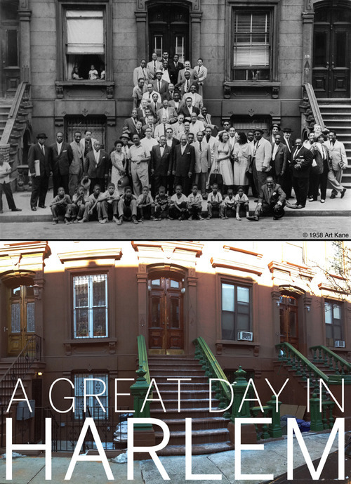

Mon, 28 Jan 2013 02:22:01 · newyork · harlem · jazz · musicians · MBA · berlinschool
A Great Day in Harlem

If time could be rewind and the past is accessible for a visit, then Harlem 1958 would definitely be on my ‘to go’ list.
It was summer. And a group portrait of 57 notable jazz musicians were photographed by Art Kane, a freelance photographer for the Esquire. Titled as ’A Great Day in Harlem’, this photograph is still considered as the greatest picture of that era of musicians ever taken.
I was fortunate enough to stumble upon the location where the photographed was taken.